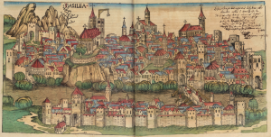

The following is the second part in a two-part installment. The first part can be found here.
A Kearnian Reading of the Lukan John
In Kearnian terms, then, the John portrayed by Luke is one who has a special, though not as paradigmatically unique as Jesus’, openness of persona to the God of possibility. Might we even say that it is Christ at work in John? Distinctive to Luke is John’s biological relationship to Jesus. Only in Luke is the promise of John’s birth recorded (Luke 1:8-25), Mary’s visit to Elizabeth recounted (Luke 1:39-56), and John’s birth included (Luke 1:57-80). In the third chapter of Luke, John is living in the wilderness when the word of the Lord comes to him and causes him to begin preaching a baptism of repentance (Luke 3:2-3).
Yet it is important to note that by this third chapter, John is already out in the wilderness. At the end of chapter 1 (1:80), John goes to the wilderness and grows spiritually strong. His move to the wilderness and his emergent spiritual strength are not the result of receiving the word of the Lord, although they could possibly be the condition for perceiving it.
Moving to the wilderness is, after all, a renunciation of the power structures of his world. It is, perhaps, for him the first stage of a prosopon transfiguration – the clearing away of obstacles preventing the possibilities of the kingdom from being actualized.[1] Such an ascetic move functioned for John as a personal clearing that allowed him to receive the word of the Lord.
What is this encounter that John has with the word of the Lord? Could we understand receiving the word of the Lord as an experience of opening to the possibilities of the Basilea; as an experience of the God who may be?
In Luke’s setting, John was identified from before birth as having a special role; yet leaving the solitude of the wilderness behind to engage others and receiving the word of the Lord coincided for John. At the least, receiving a word from the Lord is what brought John in from the wilderness, not what sent him out into it. It moved him to engage people, to move around and begin to preach and attract disciples. It called him into a public ministry, proclaiming the coming of the kingdom.
I would suggest that an opening of his particularity to the infinity of his persona occurred in John’s receiving the word of the Lord and facing others, and that through this encounter, he was transfigured. He was brought into a connection with the realm of possibility, a realm laced with ethical implications. He peered into the kingdom of the possible, and in so doing experienced a prosopon transfiguration. His message of repentance, then, was a call to others towards a similar transfiguration and entry into the Basilea.
In his encounter with the possible, John knew that the kingdom could be, but also saw that there were roadblocks to its occurrence. Structures of sin, individual and corporate, barred the way. The things that needed clearing away for him personally through his wilderness experience needed to be cleared away for others, not just on an individual level but also on the larger social scales.
Thus, he adopted the baptism of repentance for his deconstructive purposes, to be the one preparing the way for the messianic coming. He was working to break the dam clogging the flow of possibility, stirring up potentiality in those that came to him. In his baptizing, he was possibilizing.
Yet he was also acutely aware that the work he was doing was not a fulfillment of the messianic thirst for justice. His baptism of clearing away, of deconstructing the constructions that prevented the coming of the Basilea, was only the first part; a reenactment of the spiritual strength he gained in his wilderness wanderings. His work was opening up space for the possible, the possible that he expected because of the opening of his persona to the word of the Lord that came to him.
Opening space for the possible is, however, a form of allowing the actualization of the possible. Such opening makes what was impossible possible. There is a Kearnian sense to this work of opening up the possible. Kearney is critical of Jacques Derrida’s focus on the impossible, for instance. He argues, “But for me, God is the possibilizing of the impossible. … We actualize what God possibilizes and God possibilizes what remains impossible for us.”[2] I would suggest, then, that John’s word from the Lord was one of the possibility of making possible what had been impossible.
Yet John clearly sees a difference between preparing the space for the kingdom and being the Messiah. In Luke 3:16 he says, “I baptize you with water; but one who is more powerful than I is coming; I am not worthy to untie the thong of his sandals.”
It is, perhaps, this belief that he was not the Messiah that distinguished John from Jesus. Jesus accepted the
fullness of the messianicity of his persona in a way that John did not. If John did not understand himself as the Messiah, then, what was the purpose of his baptism?
Certainly, there is a great deal of scholarly literature on this topic from historical and exegetical perspectives. From a more theological level, however, I suggest that John’s baptism was a step into possibility. The step into the water was a step into the deep, into the tehom, into the chaos of open possibilities. It is what theologian Catherine Keller might call a “tehomic” movement.
Tehom is the Hebrew word for the deep of Genesis 1:2. It is the primordial chaos out of which God created. Keller brings this chaotic deep into play as a theological hermeneutic, as a “tehomic theology” of a world in flux and constant becoming. She employs poststructuralist theory to “clear a space for the tehomic hermeneutic” of uncertainty that deconstructs the notion of creation ex nihilo in favor of a creation ex profundus.[3] In this sense, it is a process theology of creativity. In the depth of the tehom, there is a chaotic abundance. She argues,
For a tehomic theology, … the deconstruction of the absolute Logos of the ex nihilo yields an otherness of cosmos bottomlessly preceding and exceeding human language. … The excess and deficiency of significance marks itself as a chaos vis-à-vis any totality; it gathers its dimensions here under the sign of the tehom.[4]
The inexpressible Deep of the tehom is, for Keller, the matrix of possibility. John’s baptism was a step away from the constrictions of the forces of the world and a step towards the potentialities of the kingdom of God; an unleashing of the tehomic chaos of kingdom possibilities. The person baptized, however, still needed to participate in actualizing the Kingdom of the Possible through their myriad day-to-day choices.
They still needed to take part in making the potentialities of the kingdom into realities. Yet those possibilities were impossible for the person until the prosopon transfiguration brought on by the encounter with John’s baptism, and its accompanying opening to the vibrant potencies of the divine. The step into the messianic forcefield unleashed a torrent of possibility.
The one who was baptized encountered not just the wild and crazy man John, but the messianic potentialities of the persona John the Baptizer. In encountering this persona, one was “othered” by it and opened to their own depth, their own infinity of possibility, and moved to face the other. In this sense, then, the baptism of John was a moment of possibilization. It was a ritual of transfiguration, on a smaller scale than Jesus’ on Mount Thabor, but a prosopon transfiguration nonetheless.
To be sure, the Gospel writer of Luke is clear that John’s baptism is superseded by baptism into Christ. In Acts 19:3-4, for instance, it reads,
Then [Paul] said, ‘Into what then were you baptized?’ [The disciples in Corinth] answered, ‘Into John’s baptism.’ Paul said, ‘John baptized with the baptism of repentance, telling the people to believe in the one who was to come after him, that is, in Jesus.
Yet this move makes sense in the Kearnian scheme of encounter with persona. Put simply, if an encounter with the persona of John the Baptizer through the tehomic waters opened a person up to the possibilities of the kingdom of God, how much more open would they become through an encounter with the prosopon par excellence of Christ? It is a qal va-homer argument: if John’s baptism leads to transfiguration and an opening to the divine possibilities, even more so does baptism in Christ, the one most fully open to divine possibility.
Does this argument, however, leave John back where we found him, the opening act before Jesus’ main event? In a sense, yes. Yet it is perhaps better to think of John more in terms of a preliminary act rather than an opening act. The opening act is extraneous, while the preliminary act sets the stage for what is to come. Though John is awaiting the Messiah to come,[5] I suggest that he plays an essential role in opening Jesus up to the possibilities of the Basilea and thus the persona of Christ.
It is Jesus’ encounter with John’s unique persona, I would argue, that opens Jesus up to the potentialities and promises of the God who may be. Again, to be a prosopon requires an encounter with another prosopon. In baptizing Jesus, John initiates Jesus’ first prosopon encounter, his first prosopon transfiguration, which acts as the word of the Lord did for John, setting Jesus in motion towards his public ministry and his increasing connection with the persona of Christ, the connection that Kearney sees reaching its apex in The Transfiguration.
It is worth noting that according to Luke, Jesus’ next act after being baptized by John isto go into the wilderness, reversing John’s process. While there, Jesus is tempted by the devil. From a Kearnian standpoint, Jesus is making his choice of how to respond to the divine that John has possibilizedforhim.
While a reading of the specific temptations is beyond the scope of this paper, I would suggest that in reversing John’s movement Jesus went to the wilderness to gain the spiritual strength to clear himself of the obstacles within himself which prevented the actualizing of the divine possibilities now opened to him.
Thus, clearing and opening should be seen as two different – reversible and interrelated, but still distinct – phases of this messianic transfiguration represented by John and Jesus. Both a dissolving of impossibility and an opening to new possibilities is required. The desert and the water go hand in hand.
One might wonder whether such a reading of Jesus’ baptism ends up as a form of adoptionism, where through his baptism Jesus becomes divine. There is, however, a distinction between adoptionism and this more Kearnian reading of Jesus’ baptism. The claim being made here is not that in Jesus’ baptism Christ descended upon him and Jesus became the Christ. Rather, my argument is that Jesus was opened up to the infinite unfolding of his persona in Christ through his baptism. As Kearney holds, “The infinite persona of Christ is not exhausted in the finite figure of Jesus of Nazareth. The Messiah is distinct, if by no means separable, from the Nazarene.”[6]
My reading offers a concrete theological test or application of that inexhaustibility. In Jesus’ baptism, he was opened up to the Messiah who was already present in his persona, just as the Messiah is present in each person’s persona. Each person can embrace the possibilities of the Kingdom so as to actualize them in the world. In his baptism, Jesus began this process of opening that eventually reached such proportions that he became inseparably identified and uniquely linked with the messianic arrival.
Sacramental Hermeneutics
In order to appreciate the force of Kearney’s hermeneutical contribution, it will prove helpful to compare it briefly with analogous moves made by another Roman Catholic phenomenologist, Jean-Luc Marion. While Marion develops a Eucharistic hermeneutic in God Without Being, drawing on the Emmaus passage in Luke 24, I would like to suggest that Kearney’s religious hermeneutic actually fits better with the beginning of Luke’s Gospel and with a different sacramental strand of thought. Kearney’s hermeneutic of religion can be read as a baptismal one, which draws on Luke 3 and the figure of John the Baptizer, and its open possibilities, in contrast to the coming of the referent that Marion finds in the Eucharistic text.
To sketch briefly Marion’s Eucharistic hermeneutic, he understands Christ as the “Living Referent” who stands outside the text and animates the text. For the disciples in the Emmaus story, the Paschal event has already occurred; it is trapped in the past and so locked out of reach. He writes,
For the disciples, as for us, it no longer belongs to the present. Once things have happened, there remain only words: for us, there remains the text of the New Testament, just as for the disciples there remained only the rumor…of the putting to death…In both cases, the event referred to is lacking.[7]
For Marion, an event is a fleeting encounter with the dynamic divine; words are the leftover “relic” or “trace.” The words do not contain the event, but only memorialize it. Even correctly interpreted, the texts can only lead the disciples to an elapsed event.
A new event, the advent of the Living Referent, is necessary for entering into the fullness of the text. As Marion commentator Scott David Foutz notes, “Marion concedes that all fall short of the ability to arrive at a full understanding of the text apart from the aid of the Living Word himself.”[8] In terms of the Emmaus passage, this advent of the Living Referent comes in the form of Christ’s self-disclosure that culminates in breaking bread with the disciples so that their eyes were opened to Christ’s appearance to them.
Marion thus sees the Eucharist as continuing to function as a place of encounter with the Living Referent, so that in the Eucharist the text of a past event bursts with fullness. He argues, “The Eucharist alone completes the hermeneutic; the hermeneutic culminates in the Eucharist; the one assures the other its condition of possibility: the intervention in person of the referent of the text as center of its meaning…”[9]
In the Eucharist, the possibilities of the Kingdom are manifest in the Living Referent. It is Christ, the Word, the Living Referent, who is the summation of the potencies and possibilities of the Basilea that is to come. The Living Referent is the bearer and collector of possibility, showing up from time to time in history, and giving us a peek at the fullness of possibility through the self-disclosure of the Eucharist.
Thus, while Christ for Kearney is a certain opening and unfolding of possibility, for Marion Christ is more the originator and container of possibility. Marion’s system is one of fulfilling while Kearney’s is one of opening.
Kearney, meanwhile, is not so much interested in the advent of the referent as he is in the advent of possibility. He places this advent in the realm of transfiguration, as an ever-unfolding phenomenon where Christ’s persona calls each of us to be transfigured as “chosen ones.”[10] Yet it seems that an appropriate parallel can be drawn between this transfiguration hermeneutic and a baptismal one.
In fact, Kearney’s sense of on-going messianism is conducive to a multiplicity of incarnational encounters that may serve as hermeneutical lenses. Breton, for instance, understands his sense of the possibilities emanating from the absence of the Cross to have strong resonances with Kearney’s God of possibility.[11]
In a Kearnian scheme, baptism is shaken from any solid mooring it may have as a moment of ontological change. It is moved beyond a free ticket into heaven, and towards an opening into the Basilea. Even rhetoric of dying and rising with Christ can be understood in terms of opening beyond the confines of the person into the possibilities of the prosopon.
Like the baptism of John’s followers, baptism today is a plunge into the deep potentialities of the kingdom. The waters of baptism become an active symbol of manifestation of possibility. Through baptism, then, there is an immersion in the tehom that unleashes a torrent of the possible.
It is a chaotic concrescence opening the person to the reaches of their persona, othering them and facing them with ethical responsibility. It is a ritual of prosopon transfiguration.
Baptism thus understood acts an entrance into the bubbling burst of divine dance. Kearney talks of the perichoretic dance within the trinity of God, humanity, and the Kingdom. “The perichoresis,” he notes, “is the dance around the khora. Peri-chora.”[12] The throbbing of the khora is the beat that propels the dance, and baptism is the opening into its rhythms.
From a hermeneutical standpoint, the God of promise emerges by looking through the waters of possibility. From the outside, it is nearly impossible to get a clear picture of what is going on beneath the shimmering surface of moving, chaotic water. Reflection, refraction, ripples, and waves all work to create a kaleidoscopic play of images.
There is much greater clarity, though, when you are under the water. Some distortions remain, but many do not. We cannot stay under the water for long, however, before we must return to the surface, where vision is once again impeded. This is the baptismal hermeneutic. The chaotic infinity of divine possibility can at best be seen kaleidoscopically, as an interplay of light and texture.
An immersion in the tehom, an opening to the persona, a whirl in the perichoretic dance, grants greater clarity to the possibilities of the kingdom; yet, the moment of relative clarity is fleeting. The openness of possibility is best seen from within, through the baptismal waters. Rather than a hermeneutic of the advent of the Living Referent, it is a hermeneutic of being engulfed by the possibility.
Though the vision of the possibility is one step, the dance does not stop there. The wilderness step, the clearing of obstacles and building of spiritual strength, remains. It is the step of building up lung capacity, clearing the way for longer dips in the pool. It is the step of repentance, deconstruction, and challenging structures that perpetuate the non-advent of the kingdom. This step too is essential for a baptismal hermeneutic. It is a step of action and participation.
As a Christian practice, baptism seen in this light can be understood rather conventionally as the beginning of a life of discipleship. It is joining an apostolic succession; not a succession of properly consecrated bishops, but – not so conventionally – a history of mutually transfiguring personas.
The ideal of the Christian community here would be that the gathered assembly is a collection of prosopons who move one another, and in particular the one who is being baptized, to a prosopon transfiguration. Christ can then be said to be truly present in the assembly and in that baptism. The prosopon transfiguration through baptism opens the way to seeing the possibilities ofthedivine,anddailyremembranceofbaptismisadailyremembranceofthepromiseoftheGod ofpossibility.
Of course, baptism alone does not give entry into the kingdom. Here again, the step of building spiritual strength is also required. Such discipline and clearing of pathways is part of the life of the community of the church. Through this second step, the baptism of possibility is brought into fullness.
Care must be taken here to avoid turning the rite of baptism into an idol for controlling a persona, just as Kearney is careful to show that Jesus does with his disciples’ desire to hold on to the clarity of his persona in the Transfiguration moment. On this drive to hold on to the elusiveness of the prosopon, Kearney notes “the disciples’ effort to fix Christ as a fetish of presence” and “the idolatrous impulse of Peter, James, and John to fuse with his person or possess him as a cult object.”[13]
The persona is always beyond reach, ungraspable. It cannot be pinned down into a ritual, dogma, or doctrine. God may be in the waters of a baptismal service, insofar as the service participates in the Kingdom, or may not be, insofar as it does not participate in the Kingdom. The God of possibility is beyond any static predictability.
Conclusion

The baptism into the possibilities of the Basilea is not without risk. A prosopon transfiguration is not for the faint of heart. For John the Baptist, as for Jesus, his transfiguring experience of opening to his persona quickly made him a persona non grata. The authorities only put up with a little bit of challenge from such a persona before John was imprisoned (Luke 3:20) and later killed. The cracks in the impossible that allow it to become possible are small and have sharp teeth.
Yet the echoes of a prosopon transfiguration continue to resound. As Kearney holds, “If and when the Kingdom comes, I believe it will be a great kind of ‘recollection,’ ‘retrieval,’ or ‘recapitulation’ (anakephalaiosis is the term used by Paul) of all those special moments of love.”[14]
Those moments and events continue to be meaningful. Even beyond Kearney’s eschatological recollection, the resounding is felt in the continuing community, the apostolic succession – a succession by no means limited to the Church. It is the history of continued moments, of prosopons provoking the transfiguration of other prosopons. The line is not unbroken, and yet the promise of God continues to be energized by the communities formed around the personas it has created, and these communities continue to create more fleeting moments of transfiguration.
From the currents of baptismal possibilities, the cry from the wild man in the wilderness rings out, declaring the messianic coming of divine promise. “Prepare the way of the Lord,” he calls, “make his paths straight.” Repent, deconstruct, clear the ground. Make space for divine possibility, and grow in spiritual strength to engage those possibilities. John’s public ministry was a preliminary act for the ongoing arrival of the messiah to come, a key link in the chain of prosopon succession. His was the work of a possibilizer.
Eric Trozzo is Director of the Lutheran Study Centre at Sabah Theological Seminary in Kota Kinabalu, Malaysia. He holds a PhD in Theological and Philosophical Studies from Drew University. He is the author of Rupturing Eschatology: Divine Glory and the Silence of the Cross (Fortress, 2014), and is currently completing a manuscript entitled The Cyberdimension: A Political Theology of Cyberspace and Cybersecurity.
[1] Within the Lukan framework, the prophecy to Zechariah certainly serves to identify John’s special calling to the reader. The prophecy notes that John is to be prohibited from any strong drink and that he will be filled with the Holy Spirit even before his birth. Yet, while this prophecy sets up John’s ministry, it is worth noting that there is a difference for Luke between John’s being filled with the Holy Spirit and his receiving the word of the Lord. Being filled with the Spirit is the preparatory phase that, though started at birth, culminated in his deconstructive action of going out to the wilderness, while receiving the word is what brought him back in to the region around the Jordan.
[2] Interview, 374.
[3] Catherine Keller, Face of the Deep: A Theology of Becoming, London, New York: Routledge, 2003.
[4] Ibid, 165. Author’s italics.
[5] It is interesting to note that in the Lukan set-up it would seem likely that John would understand the coming Messiah to be Jesus, but the text of Luke, like Mark, does not actually make this move explicitly, the way Matthew and John do.
[6] GMB, 43.
[7] Jean-Luc Marion, God Without Being, trans. by Thomas A. Carlson, (Chicago and London: University of Chicago Press, 1991), 147.
[8] Scott David Foutz, “Postmetaphysic Theology: A case study: Jean-Luc Marion” Quodlibet Online Journal, Vol. 1, Number 3, June 1999.
[9] Marion, 150.
[10] GMB, 46.
[11] See Breton, “On the God of the Possible.”
[12] Interview, 370.
[13] GMB, 42.
[14] Interview, 374.